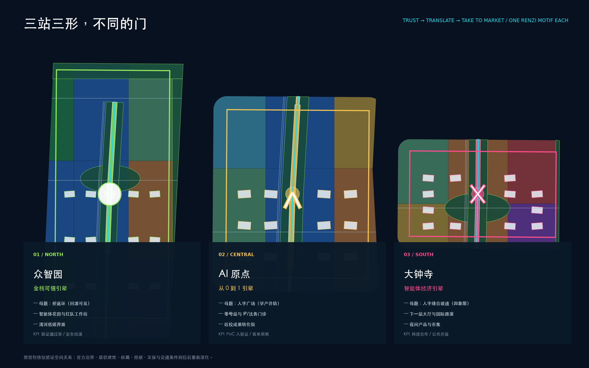

百年京张
AI智轴
OPENLINE 100
把遗址公园做成创新链的公共展示层。
研究成果在这里被看见、被验证、被创业、被采用。空间是京张智轴：七段房间序列有收有放，三处人字形母题一站一形，轴与清河小月河交织；机制是 OPENLINE 100：一张项目护照贯通研究到城市采用，能进入、能贡献，也能纠错和退出。

三层范围，一条证据链
约 43.6 km² 统筹研究
基础研究、开源、测试、孵化、资本与城市采用的完整生态；区级公开数据只用于方向判断，不下推为场地现状。
约 11.4 km² 总体设计 + 约 368.4 ha 三处重点区域
一轴七室、三擎两翼、五站三形；众智园做可信验证（母题：折返环），AI 原点做成果转化（母题：人字广场），大钟寺做智能体经济（母题：人字缝合坡道）。
三大定位 × 五大功能
百年京张文化带、都市AI生活体验带、AI融合创新带；AI全栈自主创新体系、世界级AI创新生态、AI+场景赋能新范式、智能化AI活力城市、AI治理全球话语权。
三区两翼协同回路
众智园、AI原点、大钟寺 + 中关村科技服务翼、小月河场景赋能翼；问题—转译—服务资本—可信测试—市场采用—使用反馈闭环。

三站，不同的门

建筑与更新
原型包络只检验小尺度组团、开放首层和可逆改造；容积率、高度、密度和现实拆改留结论保持待确认。
12 个更新项目
每项明确拟议责任主体、前置条件、KPI 和退出机制；先运营、再轻改、后工程。
智轴七室 × 轴河交织

七个房间，不是一条走廊
清河测试展场、众智静谷、学镇门廊、原点人字广场、编译场客厅、跨口暗展、大钟寺站厅——各有宽窄、断面族与主导公共行为；展示层以线（高展示段界面）、面（三站展场）、点（Commit Plinth 与苏州码子里程碑）三级语法组织。
五个地标 + 第二系统
智能体花园、零号站、城市提交墙、共创编译场、下一站大厅对应五种公共行为；清河与小月河两条水界面绿带让轴与真实水系交织，花园房间升级为雨洪、生境、安静、儿童、展演五类功能单元。
12 张场景卡，4 个受控验证
AI+医疗 / 教育
AI 只辅助，医生和教师负责；最小化数据、人工复核、申诉和停止阈值写进试点协议。
AI+商业 / 交通 / 文化
商户自愿、匿名聚合、非监控慢行、馆员审核；不调用个人轨迹或未经清权的平台内部数据。
从主张回到数据

来源
征集公告、仓库 site package、北京市与海淀区官方公开资料，以及 The Engine、MaRS、Paris-Saclay、AI Singapore、Helsinki、Seoul、Tsukuba 等一手案例页面。完整 URL、用途和限制见 sources.json。